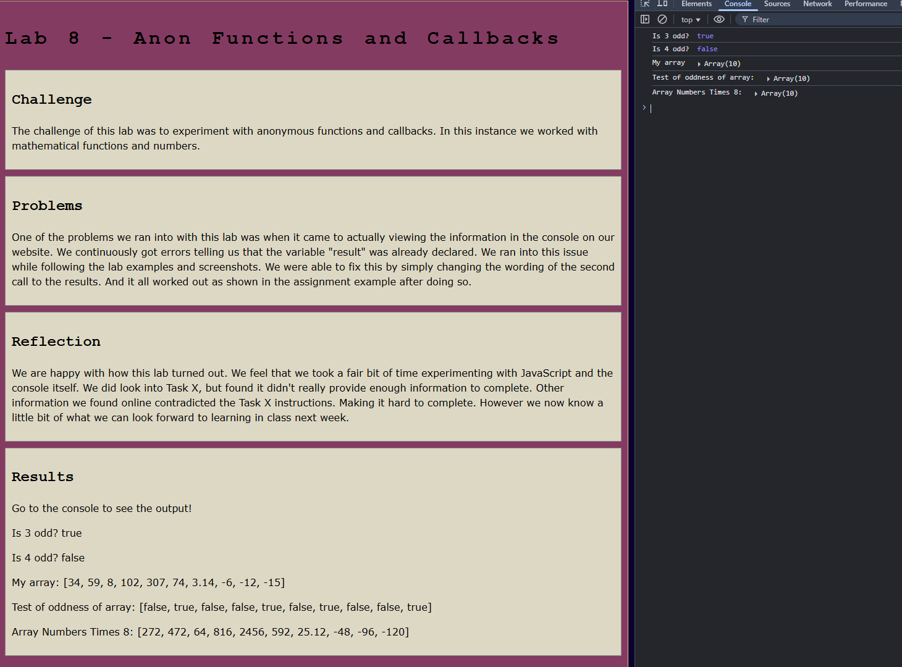
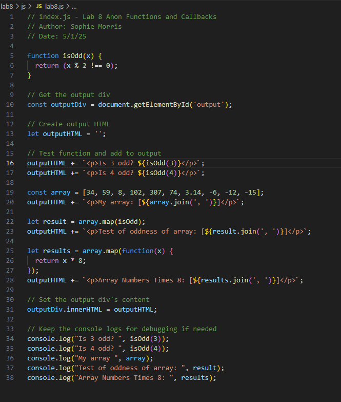

Lab 14 - Debugging Tools & Strategies
Challenge
The challenge of this lab was to look back at other labs from this quarter and debug them so that they work properly.
Problems
The biggest issue we ran into was the fact that we did not have any labs that actually needed to be debugged. However, the Task X bonus was vague and confusing. The first point was to experiment with debugger to create breakpoints in our code. We weren't entirely sure what that meant or what it entailed. We also looked into the second option, however, everyone on stackoverflow is asking questions that we could not answer given our short time in this class. As such, we decided to tackle an old Task X that had bothered us from Lab 8.
Reflection
Since this lab was very different from the others it was certainly confusing. Despite the obstacles we faced in where to begin, we were proud that we were able to revisit an old lab and make an improvement upon it thanks to the knowledge we gained throughout the quarter. As we are much more used to coding in HTML, CSS, and JS now the Task X of lab 8 didn't appear as daunting as before. And we were able to figure it out quickly.
Results
Debugging
This was the Task X for Lab 8 that my partner and I originally attempted. We had given up after a while. However, for Lab 14 we didn't have any other labs to debug, but we really wanted to revisit an old Task X. In this case, the challenge was to get the console output to appear on the actual webpage instead in just the console. To fix this error we re-wrote all the console.log commands we had and turned them into an outputHTML that would actually display them. We also kept the original console.log as tests that could still be viewed by going into the console. We made sure to set the output div's content so it would display the various test.
 